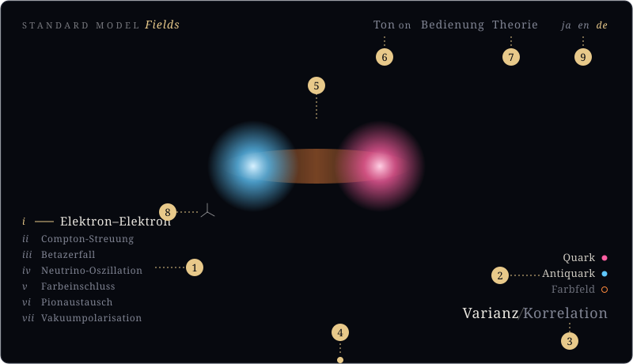
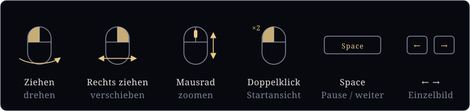

Bedienung
Was sich auf der Darstellungsseite bedienen lässt
§Bildschirm

- Thema wählen.
- Auf den Namen eines Feldes klicken, um es ein- oder auszublenden (der Punkt hat die Farbe des Feldes). In der Korrelation blendet der Eintrag „… (angenommener Ort)“ den gewählten Punkt ein oder aus.
- Zwischen Varianz und Korrelation umschalten.
- Die Linie am unteren Rand ziehen, um die Zeit zu verschieben.
- Auf dem Bildschirm ziehen oder das Mausrad drehen, um den Blickpunkt zu ändern (Abbildung unten).
- Ton ein / aus.
- Zur Theorieseite.
- Auf die Koordinatenachsen klicken, um zum anfänglichen Blickpunkt zurückzukehren.
- Sprache (ja Japanisch, en Englisch, de Deutsch). Theorie- und Bedienungsseite folgen derselben Wahl.
- Qualität (hoch / leicht). „Leicht“ ist für Smartphones und Notebooks gedacht. Ohne eigene Wahl wird sie passend zum Gerät eingestellt.
§Blickpunkt und Zeit

Auf einem Touchscreen dreht das Ziehen mit einem Finger die Ansicht; mit zwei Fingern wird gezoomt.
§Ohne Bedienung
Die Themen werden nacheinander automatisch abgespielt, jeweils zuerst in der Varianz und dann in der Korrelation. Jede Bedienung hält die automatische Wiedergabe an; 45 Sekunden nach der letzten Bedienung setzt sie wieder ein.